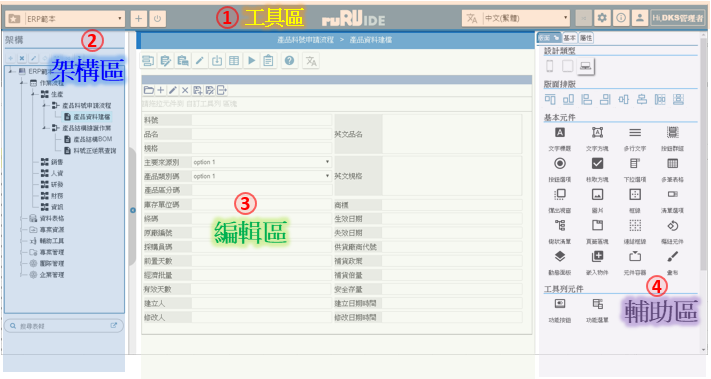
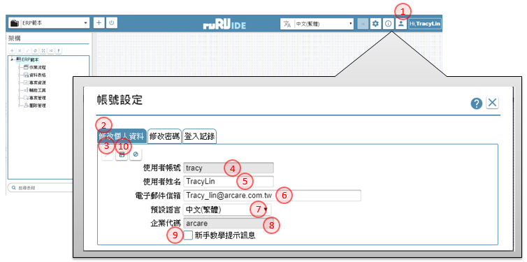

如如-智慧軟體機器人
如如-智慧軟體機器人
IDE操作手冊 2.系統登入
2.系統登入 Log in platform
作業目的：系統登入的目的管理用戶及其權限，每一個ruRU IDE user都需要有帳號，並規屬於一個以登記的企業/機構之下。新客戶必須先申請帳號，舊用戶必須輸入正確的帳號及密碼。ruRU IDE新帳號核准的權限是在 site manager。
參考資料： ℗文件
2.1 進入ruRU IDE平台
作業目的：登入ruRU IDE之前必須先取得該ruRU IDE所存在的URL。軟體需求：瀏覽器 Google Chrome 或 FireFox。
2.1.1 進入ruRU IDE平台

- 帳號：輸入已登冊的帳號, 不分大小寫
- 密碼：輸入密碼, 區分大小寫
- 選擇語言：挑選要顯示的平台語系
- 驗證碼：依畫面指示, 輸入驗證碼, 區分大小寫
- 登入鍵：確定登入系統。
- 忘記密碼：若忘記密碼時，可點選本鍵開啟【忘記密碼】頁面
- 申請新帳號：若為第一次註冊或有需要新的帳號時，可點選本鍵開啟【帳號申請】頁面
2.1.2 帳號申請
作業目的：若未有帳號者，可點選「申請帳號」連結，依螢幕指示操作申請新帳號。為了管理使用者只能看到其所屬公司的專案，所以帳號的申請必須提供其服務公司的企業代號，來過濾出它可以看得到的專案清單，或是接受PM的邀請加入某個專案。
參考資料：℗文件

- 申請帳號：在登入畫面點選本連結, 開啟【申請帳號】的頁面
- 使用者姓名：輸入密碼, 區分大小寫
- 帳號：同一個Site 內會檢控不允重複
- 密碼：輸入密碼, 區分大小寫
- 確認密碼：同樣密碼再輸入一次
- 電子郵件信箱：同一個Site 內會檢控不允重複；
- 提交鍵：系統會發送確認碼到登錄的Email信箱。
2.1.3 忘記密碼
作業目的：若忘記密碼，可點選「忘記密碼」，經由郵件重置密碼內容。
參考資料：℗文件

- 忘記密碼：在登入畫面點選本連結, 開啟【重設密碼】的頁面
- 帳號：指定要重置密碼的帳號
- 電子郵件信箱：輸入該帳號的郵件信箱
- 驗證碼：依畫面指示, 輸入驗證碼, 區分大小寫
- 確認鍵：系統會發送新的密碼到登錄的Email信箱。
2.2 ruRU IDE 主畫面介紹
 ruRU IDE的主畫面分為四大塊
- 系統架構區：包括專案的登入、切換、模組、事件清單
- 專案資源區：包含表單/報表清單、元件清單、資料標清單、檢視表清單、資料交易過帳清單)，以及公用的系統服務功能清單
- 編輯區：包含表單、報表版面編輯
- 輔助工具區：包含繪製版面所需的元件清單、屬性設定等
2.3 個人帳號維護
作業目的：提供使用者維護自己的帳號相關資訊，以及密碼的變更。
參考資料：℗文件
2.3.1 個人資料修改
作業目的：提供使用者維護自己的帳號相關資訊，以及密碼的變更。

- 帳號鍵：點選後會, 開啟【帳號設定】的頁面
- 修改個入資料：切換到本頁籤
- 編輯鍵：進入編輯模式
- 使用者帳號：顯示登入的帳號
- 使用者姓名：修改使用者姓名
- 電子郵件信箱：修改使用者郵件信箱
- 預設語言：變更使用者常用的語系
- 企業代碼：顯示本帳號在申請時所歸屬的企業代號
- 新手教學：勾選本項目的狀態下，可以在工具列上找到教學的圖示
- 儲存鍵：儲存編修後的內容
2.3.2 變更密碼
作業目的：提供使用者維護自己的帳號相關資訊，以及密碼的變更。

- 帳號鍵：點選後會, 開啟【帳號設定】的頁面
- 修改密碼：切換到本頁籤
- 編輯鍵：進入編輯模式
- 舊密碼：先輸入原存在的密碼
- 新密碼：輸入新的密碼
- 確認密碼：再一次輸入新密碼
- 儲存鍵：儲存編修後的內容
2.3.3 登入記錄
作業目的：提供使用者維護自己的帳號相關資訊，以及密碼的變更。

- 帳號鍵：點選後會, 開啟【帳號設定】的頁面
- 登入記錄：切換到本頁籤
- 姓名：顯示登入者的姓名
- 查詢日期起：查詢的起始日期
- 查詢日期迄：查詢的終止日期
- 查詢鍵：經本鍵查詢符合日期區間的登入記錄